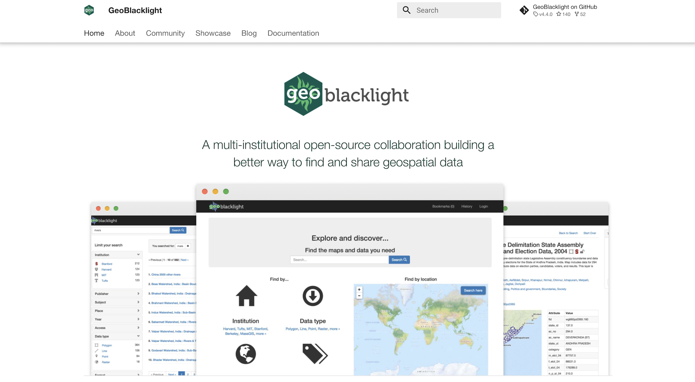
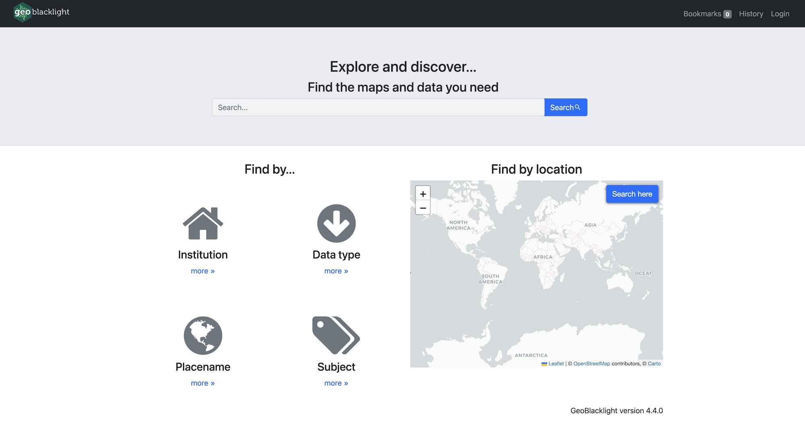
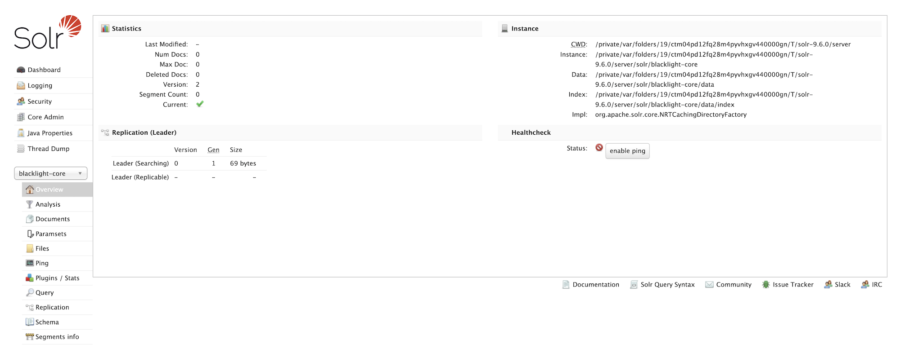
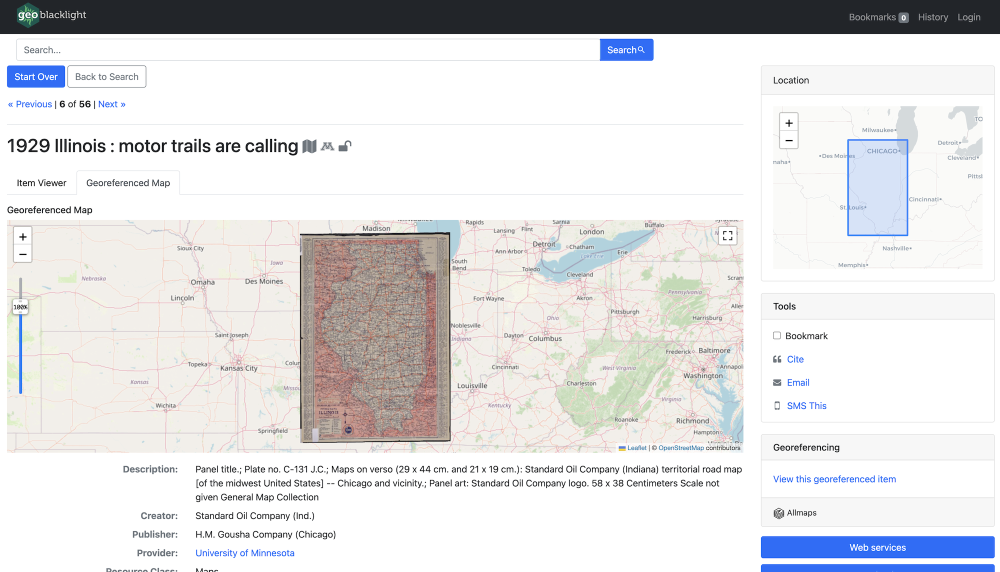
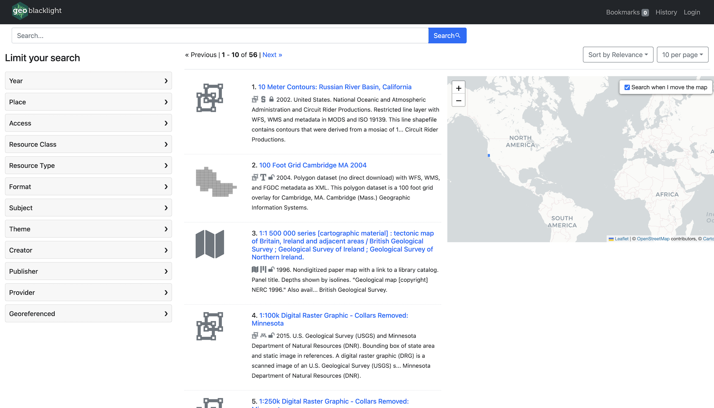

Geo4LibCamp 2024 / GeoBlacklight Workshop
Workshop date: May 20, 2024
Facilitators
- Eric Larson — Big Ten Academic Alliance
- Eliot Jordan — Princeton University
With many thanks to all the GeoBlacklight community members who help keep our website and project documentation up to date.
Part 1: Introductions and Attendee Goals (5 minutes)
Eric and Eliot are both core contributors/maintainers of the GeoBlacklight project's source code. Let's all get to know one another and hear what each attendee wants to learn in this session.
Part 2: GeoBlacklight for Beginners (30 minutes)
- GeoBlacklight Overview (5 minutes)
- Setting up a GeoBlacklight Environment (5 minutes)
- Create a GeoBlacklight Application (10 minutes)
- Index Solr Documents (10 minutes)
Screenshot - Geoblacklight Website

GeoBlacklight Overview
- What is GeoBlacklight?
- GeoBlacklight Features
- GeoBlacklight Community
What is GeoBlacklight?
GeoBlacklight is a Ruby on Rails engine, based on the popular open-source project Blacklight. The aim of the project is to provide a simple, effective open-source application for discovery of geospatial data. Many institutions are using GeoBlacklight to provide a search engine across a federated catalog of geospatial data — GeoBlacklight project showcase.
GeoBlacklight - Key Features
GeoBlacklight extends the functionality of Blacklight by providing the following:
- Text and spatial search with ranking
- Facet by institution, year, publisher, data type, access, format
- Facet by place, subject
- Results list view with icons, snippets, and map view of bounding boxes
- Spatial search on map in result list
- Detail map view for WMS features with feature inspection
- IIIF scanned map viewer
- Download the original file (Shapefile, GeoTIFF, GeoJSON, Esri Geodatabase, GeoPackage, or other SQLite database)
- Download generated Shapefile/GeoTIFF/KML/GeoJSON
- Built-in sample Solr index
- Built on top of Blacklight platform
- Search history
- Bookmark layers
- Share link via email
- Sort by relevance, year, title
- Customizable skin and facets
GeoBlacklight - Community
Participants in the GeoBlacklight community come from a variety of professional and intellectual backgrounds (including librarians, software developers, metadata specialists, applied researchers, and others), but we share a common interest in making reliable and high-quality geospatial data easily accessible to members of the research community and the broader public. Many of us work in libraries and other cultural heritage institutions that deploy (or are planning to deploy) GeoBlacklight instances to disseminate and publicize their spatial data collections.
Get Involved
- Volunteer for a Community Role
- Join a Workgroup or Interest Group
- Follow our Google Group
- Chat on Slack
- Attend a Monthly Meeting
- Participate in a Community Sprint
- Share Metadata
Setting Up a GeoBlacklight Environment
You should have the following installed before beginning:
- Ruby — For Ruby on Rails
- Java - Apache Solr runs on Java 11 or greater.
Follow the GoRails Setup steps to install a Ruby on Rails environment. Homebrew can help you install Java on macOS or Windows Subsystem for Linux.
Create a GeoBlacklight Application
Bootstrap a new GeoBlacklight Ruby on Rails application using the template script:
DISABLE_SPRING=1 rails new gbl-app -m https://raw.githubusercontent.com/geoblacklight/geoblacklight/main/template.rb
Then run the geoblacklight:server rake task to run the application:
cd gbl-app
bundle exec rake geoblacklight:server
- Visit your GeoBlacklight application at: http://localhost:3000
- Visit the Solr admin panel at: http://localhost:8983/solr/#/blacklight-core
Screenshot - GeoBlacklight Homepage

Screenshot - Solr Admin Panel

Index Solr Documents
Time to add some data to our application. GeoBlacklight uses OpenGeoMetadata's Aardvark metadata schema.
OpenGeoMetadata / Aardvark
OpenGeoMetadata (OGM) is a discovery metadata schema for geospatial resources and an open platform for sharing metadata files.
OGM Aardvark is a discovery metadata schema for geospatial resources. It was intentionally developed with cross-application in mind and can be used to describe geospatial assets of all kinds. It is also the newest metadata application profile schema for GeoBlacklight. Launched in 2021, it replaces the GeoBlacklight metadata schema version 1.0 (GBL 1.0). Compared to GBL 1.0, Aardvark incorporates additional fields for better descriptions of a wider range of resources, as well as syntactical updates in order to improve interoperability between institutions and between schemas.
Rake Tasks
With your Solr server and Rails server already running (via the geoblacklight:server rake task above), open a new terminal window and index the GeoBlacklight project's test fixtures (OGM Aardvark JSON files) via the rake task below:
bundle exec rake "geoblacklight:index:seed[:remote]"
GeoCombine
Another option for indexing data is GeoCombine. GeoCombine is a Ruby toolkit for managing geospatial metadata, including:
- Tasks for cloning, updating, and indexing OpenGeoMetadata metadata
- Library for converting metadata between standards
Example harvest from a single repository
bundle exec rake geocombine:clone\[edu.umn\]
Index your GeoCombine data. Here we're setting our schema version to Aardvark, which is the GBL v4.0+ metadata schema.
SCHEMA_VERSION="Aardvark" bundle exec rake geocombine:index
BREAK and Q&A Session (10 minutes)
Eric will return to this tutorial to list the attendee questions and discussion topics from this break (I promise).
Part 2: Advanced GeoBlacklight (40 minutes)
Using local configuration options and adding community plugins to customize your GeoBlacklight instance.
- Local config: settings.yml (5 minutes)
- Local config: catalog_controller.rb (5 minutes)
- Plugin: Blacklight::Allmaps (10 minutes)
- Plugin: GeoBlacklight Sidecar Images (10 minutes)
- Plugin: GeoBlacklight Admin (10 minutes)
Local config: settings.yml (5 minutes)
In your local GeoBlacklight application, the first file that provides considerable customization and configuration options is settings.yml. This file is specific to GeoBlacklight and it sets constant variables for the application to use, including:
- APPLICATION_LOGO_URL
- BBOX_WITHIN_BOOST
- HOMEPAGE_MAP_GEOM
- FIELDS
- WEBSERVICES_SHOWN
- DISPLAY_NOTES_SHOWN
- RELATIONSHIPS_SHOWN
- and more...
This file is loaded into the application via the Ruby config gem.
Local config: catalog_controller.rb
The next significant place where customizations and configuration options occur is within the app/controllers/catalog_controller.rb file.
Within this file, you'll find options to define/set:
- Maps > Default Leaflet basemap (config.basemap_provider)
- Solr > Default solr params (config.default_solr_params)
- Search Results > Per Page option (config.default_per_page)
- Search Results > Sort options (config.add_sort_field)
- Search Results > Define your list of facets (config.add_facet_field)
- Search Results > Define your displayed metadata fields (config.add_index_field)
- Show Page > Define your displayed metadata fields (config.add_show_field)
- Show Page > Define Sidebar Tool options (config.add_show_tools_partial)
Plugin: Blacklight::Allmaps
Let's add support for Allmaps georeferenced maps to our example application — we had two lighting talks on Allmaps this morning: Open-Source Georeferencing and Curating with Allmaps | Blacklight::Allmaps (slidedeck).
Install
Follow the blacklight_allmaps installation steps to add this plugin to our Gemfile.
# Gemfile
gem "blacklight_allmaps"
And then execute:
bundle install
Run the generator script:
# For GeoBlacklight
LIGHT=geoblacklight bundle exec rails generate blacklight:allmaps:install
Seed Fixtures
To populate Solr with some example data, you can run these tasks
# For GeoBlacklight...
LIGHT=geoblacklight rake blacklight_allmaps:index:gbl_fixtures
Harvest Allmaps IIIF Annotation Data
We harvest and store Allmaps IIIF Annotation data locally. The rake task here kicks off a background harvest process that walks through your Solr index documents (using CursorMark) and checks each document for georeferenceable? - the presence of a IIIF Manifest. If the document is indeed georeferenceable? (true) we ping the Allmaps API to determine if the map/item has already been georeferenced in Allmaps.
# For Blacklight or GeoBlacklight
bundle exec rake blacklight_allmaps:sidecars:harvest:allmaps
Populate the Georeferenced Facet
We expose the georeferenced items in the Blacklight user interface via a Georeferenced facet:
# For Blacklight or GeoBlacklight
bundle exec rake blacklight_allmaps:index:georeferenced_facet
Screenshot - Item Show Page

Plugin: GeoBlacklight Sidecar Images
This plugin adds thumbnails to search results. Let's follow the installation steps to add this feature to our example application.
Install
Add this gem to our Gemfile.
# Gemfile
gem "geoblacklight_sidecar_images", "~> 1.0"
Bundle.
bundle install
Run the generator.
bin/rails generate geoblacklight_sidecar_images:install
Run the database migration.
bin/rails db:migrate
Set your variant processor to :vips in config/application.rb. This will use libvips to generate our thumbnails.
# Image Processing
config.active_storage.variant_processor = :vips
Harvest Thumbnails
Spawn some background jobs to harvest images for all the documents in our Solr index. In development mode, these will run "inline". In a production environment, you'd want to use
bundle exec rake gblsci:images:harvest_all
Screenshot - Item Show Page

Plugin: GeoBlacklight Admin
Notice: This is going to be a full pivot from our current example codebase we've been building.
GeoBlacklight Admin is a GeoBlacklight plugin, built on Kithe, that provides a CSV-based import/export workflow for OpenGeoMetadata's Aardvark schema, rich web-forms for editing documents, and publication lifecycle tools for working with draft documents or published data. GBL Admin is also the Big Ten Academic Alliance's production workflow tool.
Installation
- Create PG database:
psql postgres
CREATE DATABASE geoblacklight_development;
- Run application template install script below:
rails _7.1.3.2_ new gbl-admin -m https://raw.githubusercontent.com/geobtaa/geoblacklight_admin/develop/template.rb
Run the Application
bundle exec rake geoblacklight:server